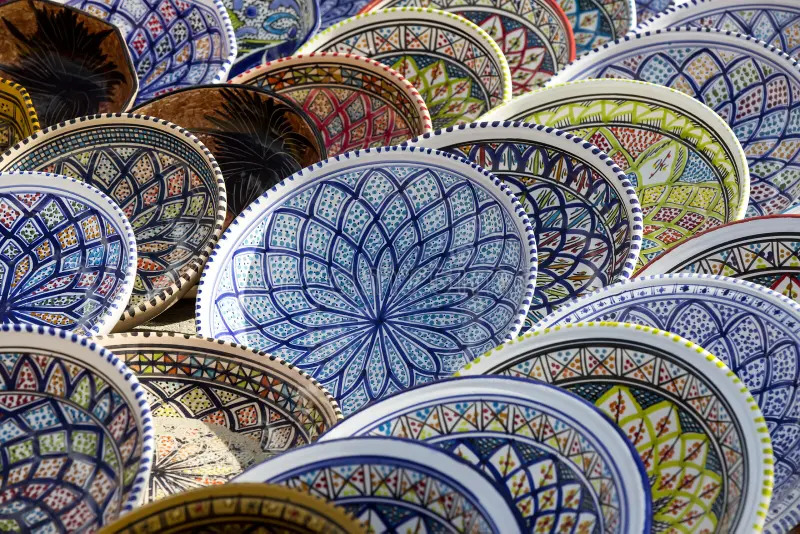
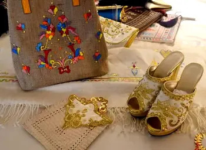
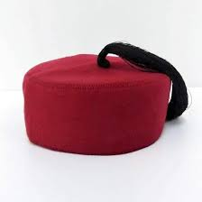
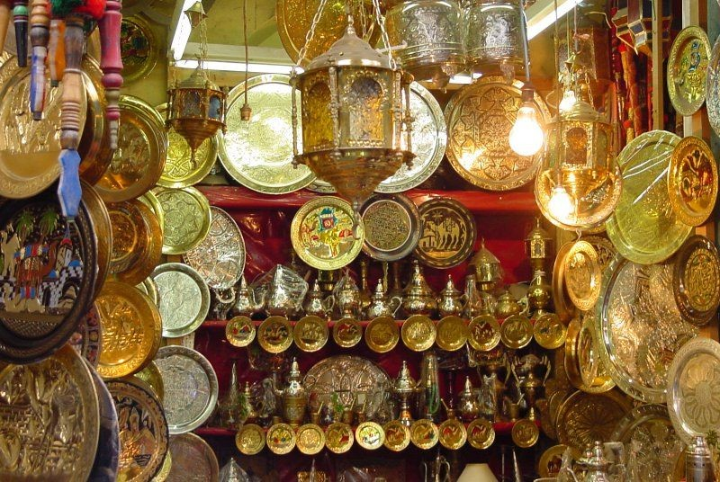
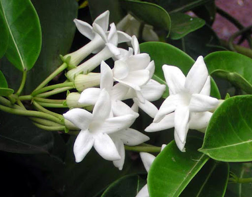

Artisanat
Des mains qui
perpétuent l'histoire
L'artisanat tunisien est vivant et diversifié. Chaque région a ses spécialités transmises de père en fils depuis des siècles. Les souks des médinas sont encore peuplés d'artisans qui travaillent selon des techniques millénaires — tissage, poterie, broderie, dinanderie, maroquinerie — face aux clients qui regardent naître les objets sous leurs yeux.
Le gouvernement tunisien a mis en place l'ONAT — Office National de l'Artisanat — pour labelliser et protéger les productions artisanales authentiques face à la concurrence des produits industriels importés.

Kairouan · Centre
Tapis berbères
Les tapis de Kairouan sont réputés dans le monde entier pour la finesse de leur tissage et la richesse de leurs motifs géométriques. Noués à la main, ils peuvent nécessiter plusieurs mois de travail. Les motifs — triangles, losanges, étoiles — sont hérités de l'art berbère ancestral et chaque famille a ses propres dessins transmis de mère en fille.

Nabeul · Cap Bon
Céramique & poterie
Nabeul est la capitale incontestée de la céramique tunisienne. Ses ateliers produisent des poteries, carreaux et vaisselles décorés aux motifs géométriques et floraux dans des tons de bleu, vert et ocre caractéristiques. La tradition remonte à l'époque romaine — des ateliers de poterie antiques ont été découverts sous la ville moderne.

Tunis · Monastir · Sfax
Broderie traditionnelle
La broderie tunisienne est un art délicat qui orne les costumes traditionnels, les nappes et les coussins. Les techniques varient selon les régions : la broderie de Tunis utilise des fils de soie et d'or sur velours, celle de Monastir est réputée pour ses motifs floraux, celle de Sfax pour ses arabesques géométriques minutieuses.

Tunis · Médina
La chéchia
La chéchia — ce bonnet rouge emblématique — est l'un des artisanats les plus anciens de Tunis. Fabriquée en laine feutrée et teinte au henné pour obtenir sa couleur rouge caractéristique, elle était autrefois portée par tous les hommes tunisiens. Le souk des chéchias dans la médina de Tunis est l'un des plus beaux du pays.

Tunis · Sfax
Dinanderie & cuivre
Les dinandiers tunisiens travaillent le cuivre, le laiton et l'argent avec des techniques héritées de l'artisanat ottoman. Plateaux, théières, lampes, chandeliers et portes ciselées sortent de leurs mains selon des procédés ancestraux. Le son caractéristique des marteaux sur le métal résonne encore dans les souks des médinas.

Tunis · Nabeul · Sfax
Parfumerie & jasmin
Le jasmin est l'emblème floral de la Tunisie. Les vendeurs de jasmin parcourent les rues des villes avec leurs bouquets de fleurs blanches — tradition immuable depuis des siècles. Les parfumeurs tunisiens distillent l'essence de jasmin, de rose, de géranium et de néroli pour créer des eaux de fleurs et des parfums utilisés dans la cuisine et la beauté.